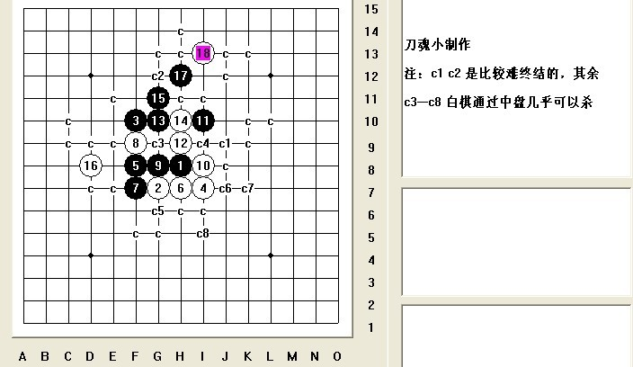

[学术讨论]流星局，白棋如何控制开局
#1 [学术讨论]流星局，白棋如何控制开局作者：刀魂 发表时间：2009-4-23 8:25:32
=======上图对应的爱五子棋谱代码如下，以便你拆解：========
h8g7f10i7f7a1f8
======================================================
=======上图对应的爱五子棋谱代码如下，以便你拆解：========
h8g7f10i7f8h7f7f9g8i8i10h9g10h10g11e9g9g12e11d12f11d11c10
======================================================
注：黑杀
请问，，，有更好的白棋走法不，，，可以比较好的控制住局面，个人觉得白16没有走好，长星局，白棋控制开局是关键
［此帖子已被 刀魂 在 2009-4-23 9:47:39 编辑过］
［此帖子已被 茗弈小刀 在 2009-4-23 10:52:11 编辑过］
#2 Re:长星局，白棋如何控制开局作者：茗弈如梦 发表时间：2009-4-23 8:57:04
=======上图对应的爱五子棋谱代码如下，以便你拆解：========
h8i9j6g9j8h9j9j7i8g8g6h7i6h6i5l8
======================================================以前见过这个的毛巾谱,白必
［ 刀魂 于 2009-4-23 9:18:01 时花20金币送鲜花一朵］
［ 茗弈小刀 于 2009-4-24 15:30:26 时花20金币送鲜花一朵］
#3 Re:Re:长星局，白棋如何控制开局作者：刀魂 发表时间：2009-4-23 9:20:04
引用：
原文由 茗弈如梦 发表于 2009-4-23 8:57:04 :
=======上图对应的爱五子棋谱代码如下，以便你拆解：========
h8i9j6g9j8h9j9j7i8g8g6h7i6h6i5l8
======================================================以前见过这个的毛巾谱,白必［ 刀魂 于 2009-4-23 9:18:01 时花20金币送鲜花一朵］
谢谢，姐姐的 提示，昨天我 就是16 下的不对，，，变成很被动的局面了，本来白棋一直优的，，，再次感谢
#4 Re:长星局，白棋如何控制开局作者：学生刀 发表时间：2009-4-23 9:33:04
刀魂再次说错开局 恭喜 难怪会输
［ 刀魂 于 2009-4-23 9:49:04 时花50金币砸了你一个臭鸡蛋］
#5 Re:长星局，白棋如何控制开局作者：寂寞的烟 发表时间：2009-4-23 9:39:28
 强！
强！#6 Re:长星局，白棋如何控制开局作者：游戏人间 发表时间：2009-4-23 9:39:49
顺便说下。。。据说这个大家都称呼为流星#7 Re:长星局，白棋如何控制开局作者：学生刀 发表时间：2009-4-23 9:43:53
如果4手下中间 叫长星也没啥 但是LZ选了流星的4
lz编辑的可真快哦，给你个蛋蛋吧
［此帖子已被 学生刀 在 2009-4-23 9:48:25 编辑过］
#8 Re:流星局，白棋如何控制开局作者：刀魂 发表时间：2009-4-23 9:48:38
呵呵，，，说错开局。。。好像我错了2次了。。。谢谢提醒
刀学生，我也给你个 蛋蛋哟
［此帖子已被 刀魂 在 2009-4-23 9:50:47 编辑过］
#9 Re:流星局，白棋如何控制开局作者：寂寞的烟 发表时间：2009-4-23 9:50:29
刀魂这个态度还不错。#10 Re:Re:流星局，白棋如何控制开局作者：刀魂 发表时间：2009-4-23 9:51:39
引用：
原文由 寂寞的烟 发表于 2009-4-23 9:50:29 :
刀魂这个态度还不错。我每次 态度都很好的哟。。。只要你们 对我好，，，我也会对大家好的。。。其实我是 爱你们的

#11 Re:流星局，白棋如何控制开局作者：学生刀 发表时间：2009-4-23 9:51:57
呵呵 反正是小号 专收刀魂金币 省的你害人去。#12 Re:流星局，白棋如何控制开局作者：学生刀 发表时间：2009-4-23 9:53:20
刀魂 提醒你一下 你只改了标题 内容还是写长星哦 ，你的办事态度太不认真了，再编辑一次吧#13 Re:流星局，白棋如何控制开局作者：刀魂 发表时间：2009-4-23 10:02:49
==============================
此帖内容被屏蔽!
==============================
此帖被失落刀 屏蔽于 2009-4-24 15:50:56
#14 Re:流星局，白棋如何控制开局作者：学生刀 发表时间：2009-4-23 10:05:07
叹时光 流惊奇 刀魂绽放千万里 居然把这种私密对话都贴出来了
#15 Re:Re:流星局，白棋如何控制开局作者：刀魂 发表时间：2009-4-23 10:07:16
引用：
原文由 学生刀 发表于 2009-4-23 10:05:07 :
叹时光 流惊奇 刀魂绽放千万里这也不是 什么隐私，是小刀师姐找给我的，是她老人家和花影姐姐的对话，，，没有什么隐私不隐私的吧，都是谈论我的对话，觉得对你们大家有所提高（我也不知道能为你们提高什么东东
#16 Re:流星局，白棋如何控制开局作者：学生刀 发表时间：2009-4-23 10:09:12
原来如此哦。
［ 刀魂 于 2009-4-23 10:09:29 时花2000金币送鲜花一朵］
［此帖子已被 学生刀 在 2009-4-23 10:10:05 编辑过］
#17 Re:流星局，白棋如何控制开局作者：刀魂 发表时间：2009-4-23 10:16:18
［ 刀学生 于 2009-4-23 10:09:29 时花2000000金币送鲜花一朵］
#18 Re:流星局，白棋如何控制开局作者：雅典娜 发表时间：2009-4-23 10:17:56
辛苦刀魂了,冒着被砸蛋的危险发出了高水准的贴子了!#19 Re:Re:流星局，白棋如何控制开局作者：刀魂 发表时间：2009-4-23 10:21:15
引用：
原文由 雅典娜 发表于 2009-4-23 10:17:56 :
辛苦刀魂了,冒着被砸蛋的危险发出了高水准的贴子了!［ 刀魂 于 2009-4-23 10:09:29 时花999999999 金币 送 雅典娜 鲜花999999999朵］
谢谢 夸奖
#20 Re:[学术讨论]流星局，白棋如何控制开局作者：忧郁的双眼 发表时间：2009-4-23 11:06:14
流星一打比较难控制#21 Re:[学术讨论]流星局，白棋如何控制开局作者：刀魂 发表时间：2009-4-23 12:11:58

自己的事情 自己解决。。。
 刀魂 流星黑15败 终结谱 16是关键.rar
刀魂 流星黑15败 终结谱 16是关键.rar#22 Re:[学术讨论]流星局，白棋如何控制开局作者：刀魂 发表时间：2009-4-24 13:30:05
，，，人呢。。。yoyo#23 Re:[学术讨论]流星局，白棋如何控制开局作者：点点 发表时间：2009-4-24 13:33:58
三手一 100桌
#24 Re:[学术讨论]流星局，白棋如何控制开局作者：屏蔽 发表时间：2009-4-24 14:50:24
引用：
原文由 刀魂 发表于 2009-4-23 8:25:32 :
=======上图对应的爱五子棋谱代码如下，以便你拆解：========
h8g7f10i7f7a1f8
======================================================
=======上图对应的爱五子棋谱代码如下，以便你拆解：========
h8g7f10i7f8h7f7f9g8i8i10h9g10h10g11e9g9g12e11d12f11d11c10
======================================================注：黑杀
请问，，，有更好的白棋走法不，，，可以比较好的控制住局面，个人觉得白16没有走好，长星局，白棋控制开局是关键
［此帖子已被 刀魂 在 2009-4-23 9:47:39 编辑过］
［此帖子已被 茗弈小刀 在 2009-4-23 10:52:11 编辑过］
=======上图对应的爱五子棋谱代码如下，以便你拆解：========
h8i9j6g9j8h9j9j7i8g8g6h7i6h6i5k7i7i4k5l4j5l5g5h5h4g3i3j2m6
======================================================
=======上图对应的爱五子棋谱代码如下，以便你拆解：========
h8i9j6g9j8h9j9j7i8g8g6h7i6h6i5k7i7i4k5l4j5h5m6l7l6k6m7h4h3j4k4l5m4m5n5l3n6
======================================================请注意不要弄错防点位置和手顺……
#25 Re:[学术讨论]流星局，白棋如何控制开局作者：茗弈小刀 发表时间：2009-4-24 15:29:06
我给你看的意思刀魂，希望你能明白，我和你花影姐姐一直没有放弃你，在尽力挽救你，帮你。不是喜欢你，请不要自作多情！#26 Re:[学术讨论]流星局，白棋如何控制开局作者：茗弈小刀 发表时间：2009-4-24 15:34:34
其实大家都在帮助你，只是人的耐心是有个限度的，你多伤几次帮你的朋友，那么你会失去所有朋友，你会孤独一人！希望以后慎重对人对事！心里要有别人，不能什么都只想着自己.#27 Re:Re:[学术讨论]流星局，白棋如何控制开局作者：刀魂 发表时间：2009-4-24 17:01:02
引用：
原文由 茗弈小刀 发表于 2009-4-24 15:29:06 :
我给你看的意思刀魂，希望你能明白，我和你花影姐姐一直没有放弃你，在尽力挽救你，帮你。不是喜欢你，请不要自作多情！毛主席 教导我们，，，命运掌握在自己手里。。。我既然选择走 砍 这条不归路，，，我就不会后悔的，，，我觉得你把你自己过
度给美化了，我叫你小师姐，是因为我刚开始什么都不懂得情况下，叫你小师姐的，，，我敢保证你从来没有教过我，，，（不过
做人这方面，倒是说了一些），再说了俄，，，现在的我，不需要什么人帮助，我的朋友很多，，，很多，，，只是有些人看我进
步太快了，有点受不了，他们只看到我 砍 人的风光，却没有看到我背后的付出，（我每天下棋12小时以上，这样导致的结果是：胃病，肠病，身体消瘦，，，甚至还有前列腺炎（纯属玩笑
蛮多的，不过话说回来，有时候，我就是性格太个性化了，什么都说。。。什么都做。。。
#28 Re:Re:[学术讨论]流星局，白棋如何控制开局作者：刀魂 发表时间：2009-4-24 17:10:33
引用：
原文由 点点 发表于 2009-4-24 13:33:58 :三手一 100桌
弱弱的问一句，，，点点 小同志，，，你是哪个。。。
大号开出来，，，胜率低于90的不下。。。
#29 Re:[学术讨论]流星局，白棋如何控制开局作者：屏蔽 发表时间：2009-4-24 17:11:16
这帖的前缀还是“[学术讨论]”吧？
网络是一个大家守秩序才清净自由的地方。
刀魂注意身体吧，下棋是一项运动，身体是本钱，点错下错是件多么囧囧的事情。
#30 Re:Re:[学术讨论]流星局，白棋如何控制开局作者：刀魂 发表时间：2009-4-24 21:09:02
引用：
原文由 屏蔽 发表于 2009-4-24 17:11:16 :这帖的前缀还是“[学术讨论]”吧？
网络是一个大家守秩序才清净自由的地方。
刀魂注意身体吧，下棋是一项运动，身体是本钱，点错下错是件多么囧囧的事情。